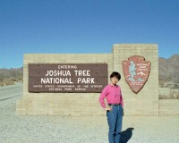
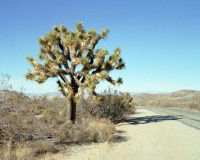
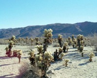
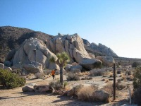

 |
エントランス。 |
| これがJoshua
Treeと呼ばれるサボテン。すごく動きのある形。見ているだけでいたそう。 アリゾナ側から入園したからか、カリフォルニアはお金が無いのか道路が荒れている。 |
 |
 |
大好きなCholla Cactus。 Cholla Cactus Gardenへ行けば一面に見られる。 |
| 岩場もあり、トレイル可。 |  |
パームスプリングスより車で45分ほど。途中に風車地帯もあり楽しいドライブです。セットでお勧め。
近いといっても距離にして40マイル。ガソリンと水は予め確保して行かれることをお勧めします。サングラスも必要。日中暑く、1月でもTシャツでした。
Written : 2004.03.29